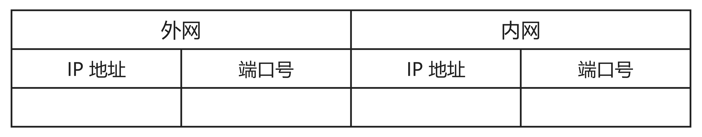

2020-47
IPv4万维网某校园网有两个局域网，通过路由器 R1、R2 和 R3 互联后接入 Internet，S1 和 S2 为以太网交换机。局域网采用静态 IP 地址配置，路由器部分接口以及各主机的 IP 地址如下图所示。

假设 NAT 转换表结构为

请回答下列问题：
1）为使 H2 和 H3 能够访问 Web 服务器（使用默认端口号），需要进行什么配置？
2）若 H2 主动访问 Web 服务器时，将 HTTP 请求报文封装到 IP 数据报 P 中发送，则 H2 发送 P 的源 IP 地址和目的 IP 地址分别是什么？经过 R3 转发后，P 的源 IP 地址和目的 IP 地址分别是什么？经过 R2 转发后，P 的源 IP 地址和目的 IP 地址分别是什么？
（1）在 R2 上配置静态 NAT 端口映射：
| 外网 IP 地址 | 外网端口号 | 内网 IP 地址 | 内网端口号 |
|---|---|---|---|
203.10.2.2 | 80 | 192.168.1.2 | 80 |
（2）
| 位置 | 源 IP 地址 | 目的 IP 地址 |
|---|---|---|
| H2 发送时 | 192.168.1.2 | 203.10.2.2 |
| R3 转发后 | 203.10.2.6 | 203.10.2.2 |
| R2 转发后 | 203.10.2.6 | 192.168.1.2 |
本题讲解：私网 Web 服务器如何被外网访问——NAT 的"出"与"进"
第 1 问：卡在哪，就配哪
机制：先看清网络格局。 两个局域网都用私网段 192.168.1.0/24，而且重复使用——Web 服务器和 H2 同为 192.168.1.2，H1 和 H3 同为 192.168.1.3，R2、R3 的内网口同为 192.168.1.1。这不冲突：私网地址只在各自 NAT 边界之内有效，两个私网互不知晓对方的存在。但代价是：私网地址在公网上不可路由，外面的世界里根本没有"192.168.1.2"这个门牌。
所以"H2、H3 访问不了 Web 服务器"的病根在入口：外网的数据报进不了 R2 身后的私网。药方是在 R2 上给 Web 服务器挂一个公网门牌——静态 NAT 端口映射：
| 外网 IP 地址 | 外网端口号 | 内网 IP 地址 | 内网端口号 |
|---|---|---|---|
203.10.2.2 | 80 | 192.168.1.2 | 80 |
为什么门牌是 R2 自己的接口地址 203.10.2.2？ 数据报要进这个私网，必须先到达直连私网的 NAT 路由器 R2，所以目的地址必须是 R2 公网侧收得到的地址——题给的公网互连链路 203.10.2.0/30 上属于 R2 的正是 203.10.2.2。为什么外网端口号是 80：Web 服务走 HTTP，默认端口号 80；外网发往 203.10.2.2:80 的数据报由 R2 按静态表把目的改写为 192.168.1.2:80 送进私网。（H2/H3 的出网流量则由 R3 做 NAPT：源地址换成 R3 的公网地址 203.10.2.6——这是第 2 问的伏笔。）
第 2 问：数据报 P 的三段旅程
答题框架：源地址看"出口改没改"，目的地址看"入口改没改"——改写只发生在私网两侧的 NAT 路由器上；中间的 R1 在公网侧只查表转发，不改地址。
| 位置 | 源 IP 地址 | 目的 IP 地址 |
|---|---|---|
| H2 发送时 | 192.168.1.2 | 203.10.2.2 |
| 经过 R3 转发后 | 203.10.2.6 | 203.10.2.2 |
| 经过 R2 转发后 | 203.10.2.6 | 192.168.1.2 |
- H2 发送时：源填自己的私网地址
192.168.1.2；目的填 Web 服务器对外的公网门牌203.10.2.2。为什么目的不能填192.168.1.2：一来 H2 自己就占着这个地址，二来它只在 R3 的私网内有效、出不了公网。数据报先送到默认网关 R3（内网口192.168.1.1）。 - 经过 R3 转发后：R3 是 H2 所在私网的出口，做源地址转换：源
192.168.1.2→203.10.2.6（R3 的公网接口地址），目的不变。为什么必须改源：源若是私网地址，Web 服务器的回包（目的192.168.1.2）在公网上无法路由，永远回不到 H2。 - 经过 R2 转发后：目的
203.10.2.2命中 R2 的静态映射 → R2 做目的地址转换：目的 →192.168.1.2，送进自己身后的私网，送达 Web 服务器。为什么源203.10.2.6不改：它是合法公网地址，而且是服务器回包的归宿——改了，回包就找不到 R3 了。
易错点
- H2 发送时目的写成
192.168.1.2：私网地址出不了公网，且与 H2 自身地址重号；必须写公网门牌203.10.2.2。 - R3 转发后源仍是
192.168.1.2：出口必须把源换成公网地址，否则回程无法路由。 - R2 转发后又去改源：R2 只按静态表改目的；源
203.10.2.6是回程的钥匙，全程不变。 - 把映射配在 R1 或 R3 上：服务器在 R2 身后，能把它"领进门"的只有直连私网的 R2；R3 的私网里根本没有服务器。
一句话：一进一出各归各的 NAT——R3 出口改源（192.168.1.2→203.10.2.6），R2 入口改目的（203.10.2.2→192.168.1.2）；外网能"进"的前提是 R2 上的静态映射203.10.2.2:80 ⇄ 192.168.1.2:80。